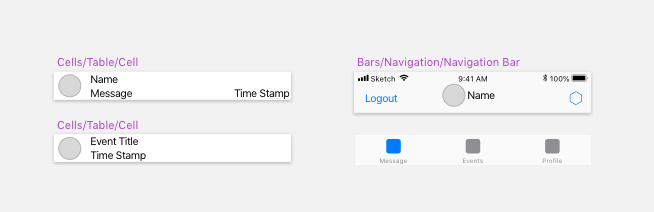
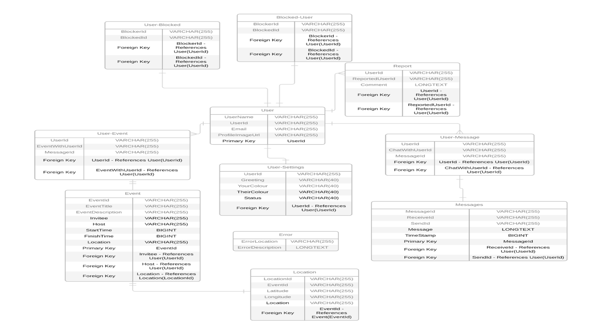
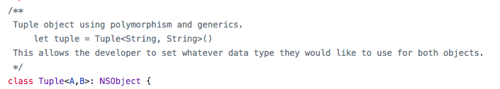
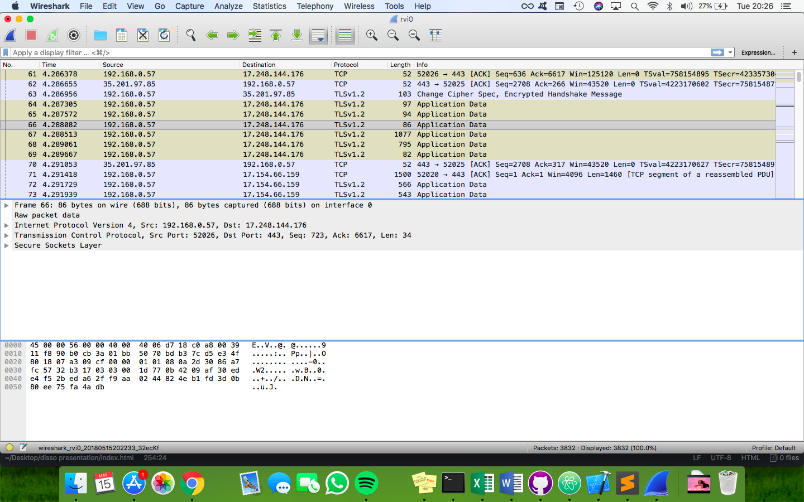
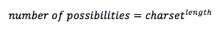
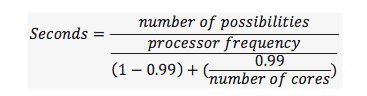

Event Organising Application
Daniel O'Sullivan - P15217764
Set transition
Why Did I choose this project?
My main goals for this project were:
- To make it easier for users to create an event
- To make it easier to meet new people
- To Learn the Swift programming language
- To gain experience using a Google API
Target
- Older iOS devices aren't supported.
- Any iOS device running at least iOS 11.0.2 works fine.
Designs
Custom views

Logo
ERD Diagram

Database
Firebase
My Database
- My Storage
- My Authentication
Firebase
- Tree Structure
- Nested Tables
- Real Time database
Free
Data Structures
Tuples
- Polymorphic
- Uses Generics

Github
Security
All traffic between the device and the database is encrypted

Vignère Cipher is used

Number of possibile combinations formula

How long it will take to crack formula
Tabular Tables
| Key Length |
Possible Combinations |
Time to crack |
| 12 |
2176782336 |
3.3 |
| 13 |
13060694016 |
19.6 |
| 14 |
78364164096 |
117.5 |
| 15 |
4.70185E+11 |
705.2 |
Event Conflicting
Checks both calendars for conflicting events
Event Message Recognisition
Recognises messages that are about events
Many more that are outlined within the final report
Issues & Solutions
Issues encountered include:
- Creating the encryption
- Crashes Would often occur due to nil values
- Image Flickering
- When downloading and sorting table items, the images would flicker.
Solutions
- Creating the encryption
- Initially Written in Java
- Image Flickering
DEMO!